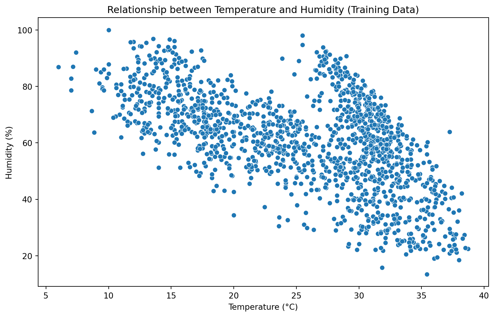
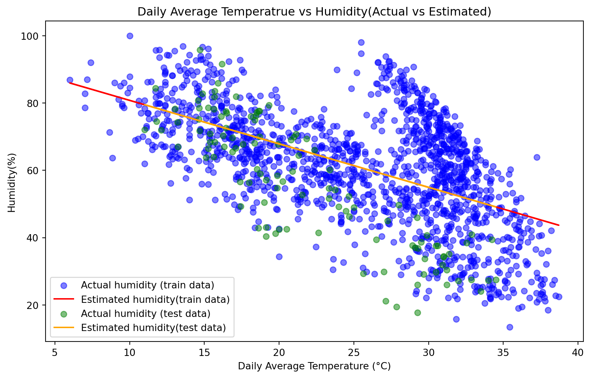
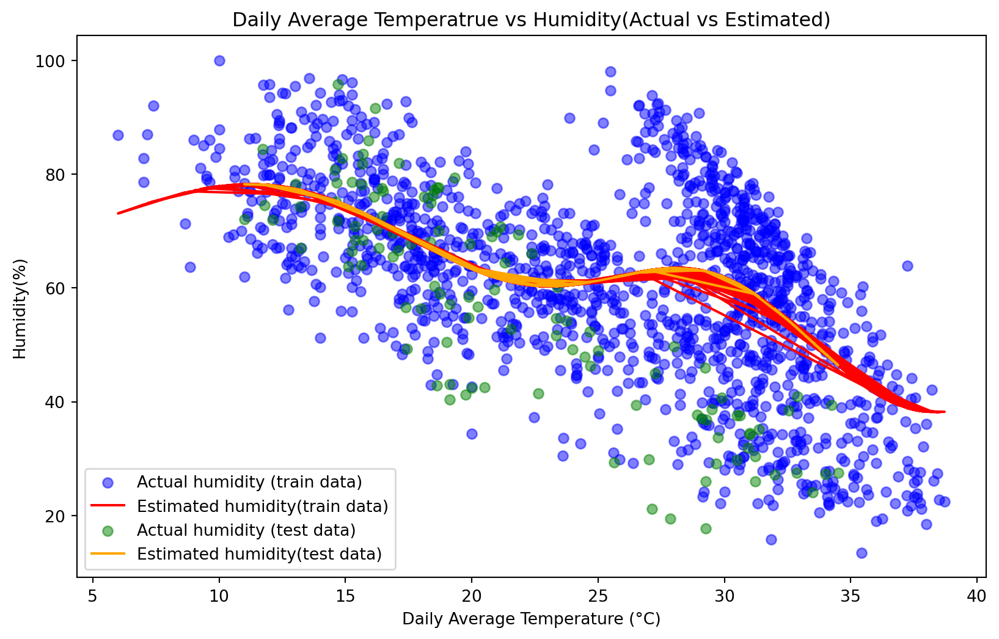

Predicting Humidity Using Linear and Non-linear Regression
code
analysis
Author
Xiaoying Yang
Published
November 25, 2023
Temperature and Humidity
Temperature and humidity are critical for weather forecasting and climate modeling. They affect agricultural production, building design, energy use etc. [1] In the area of environmental science, understanding the relationship between temperature and humidity is critical in detecting changes in ecosystems, predicting weather patterns, and even assessing global climate change. Moreover, temperature and humidity based analysis can help develop more effective strategies and decisions for industries that need to consider environmental factors. Therefore, the prediction of climate information is a topic of interests that has been analyzed through a long period. Machine Learning, a powerful tool in dealing large datasets, is expected to provide a more precise climate prediction than ever before.
In this blog, we explore the application of machine learning algorithms for linear and non-linear regression, focusing on predicting humidity based on average daily temperature. We will employ the Lasso algorithm for linear regression and leverage Support Vector Regression(SVR) for the non-linear regression analysis. Through a comparative analysis of linear and non-linear regression results, this blog illustrates how machine learning algorithms can be effectively utilized in climate prediction scenarios.
About the Dataset
This blog explores the application of regressions through a comprehensive dataset, capturing climate data from January 1, 2013, to April 24, 2017, in Delhi, India. [2] Our focus is to unravel the intricate relationship between temperature and humidity using this detailed dataset. The scatter plot shows the relationship between temperature and humidity in the training data. It appears there might be some non-linear relationship between these two variables. Nevertheless, we will conduct both linear and regression to explore the relationship between temperature and humidity.
import pandas as pdfrom sklearn.svm import SVRfrom sklearn.metrics import mean_squared_error, r2_scoreimport matplotlib.pyplot as pltimport seaborn as sns# Functions for loading and pre-processing datadef load_and_preprocess_data(file_path): data = pd.read_csv(file_path)return data# load training & test datasettrain_data_path ='https://raw.githubusercontent.com/xiaoyingyang96/xiaoyingyang96.github.io/main/Data/DailyDelhiClimateTrain.csv'test_data_path ='https://raw.githubusercontent.com/xiaoyingyang96/xiaoyingyang96.github.io/main/Data/DailyDelhiClimateTest.csv'train_data = load_and_preprocess_data(train_data_path)test_data = load_and_preprocess_data(test_data_path)# Define features as daily avg temperature. Define target as humidityfeatures = ['meantemp']target ='humidity'# Prepare training and test dataX_train = train_data[features]y_train = train_data[target]X_test = test_data[features]y_test = test_data[target]# Plotting the relationship between temperature and humidity in the training dataplt.figure(figsize=(10, 6))sns.scatterplot(x='meantemp', y='humidity',data = train_data)plt.title('Relationship between Temperature and Humidity (Training Data)')plt.xlabel('Temperature (°C)')plt.ylabel('Humidity (%)')plt.show()

Linear Regression: Least Absolute Shrinkage and Selection Operator (Lasso)
In statistics and machine learning, Lasso (least absolute shrinkage and selection operator) is a regression analysis method that performs both variable selection and regularization in order to enhance the prediction accuracy and interpretability of the resulting statistical model. In this blog, we employed Lasso to conduct the linear regression analysis to predict the humidity based on average daily temperature.
Here are main steps in apply Lasso:
1. Data Preparation: load data, clean data, choose relevant features for the regression, and split data into training and testing sets.
2. Feature Scaling: Lasso is sensitive to the scale of input features, so it’s a good practice to standardize or normalize features.
3. Model creation and training: Instantiate a Lasso object, choose an alpha value which controls the degree of shrinkage, and train the model on training dataset.
4. Model evaluation: Common metrics for regression include MSE, Root Mean Squared Error (RMSE), and R-squared (R^2)
# LASSO: Plot scatter and regression diagramplt.figure(figsize=(10, 6))plt.scatter(train_data['meantemp'], train_data['humidity'], color='blue', alpha=0.5, label='Actual humidity (train data)')plt.plot(train_data['meantemp'], y_train_pred_lasso, color='red', label='Estimated humidity(train data)')plt.scatter(test_data['meantemp'], test_data['humidity'], color='green', alpha=0.5, label='Actual humidity (test data)')plt.plot(test_data['meantemp'], y_test_pred_lasso, color='orange', label='Estimated humidity(test data)')plt.xlabel('Daily Average Temperature (°C)')plt.ylabel('Humidity(%)')plt.title('Daily Average Temperatrue vs Humidity(Actual vs Estimated)')plt.legend()plt.show()

Mean Squared Error is a measure of the average of the squares of the errors or deviations. In simpler terms, it calculates the average squared difference between the estimated values and the actual value. The RMSE values indicate the average magnitude of the errors in predicting humidity from temperature, thus a lower RMSE value is better.
The Coefficient of Determination, often denoted as R², is a statistical measure that represents the proportion of variance for the dependent variable that’s explained by the independent variables in a regression model.
\[ R^2 = 1-\frac{RSS}{TSS} \]
\(R^2\) = coefficient of determination
RSS= sum of squares of residuals. It is the sum of the squared differences between actual and predicted values.
TSS = total sum of squares. It is the sum of the squared differences from the mean of the actual values.
In this study, the RMSE of 13.75 on the training data and 15.79 on the testing data suggests moderate errors in the model’s predictions. The higher RMSE on the testing data compared to the training data may indicate a slight overfitting to the training data or a difference in the distribution of the training and testing sets.
In lasso regression model. the R² values in both the training (0.33) and testing (0.31) datasets are relatively low. This indicates that 33% of the variance in humidity is explained by temperature in the training set, and about 31% in the testing set. These indexes suggest that temperature alone may not be sufficient to accurately predict humidity, or that the relationship between temperature and humidity is not strongly linear.
In conclusion, the model’s performance is moderate. More relevant features are expected to apply in the model to make a better prediction of humidity.
Support Vector Regression (SVR) is a type of machine learning algorithm that falls under the category of Support Vector Machines (SVM). Instead of finding a hyperplane to separate two classes, SVR algorithm tries to fit the best line within a threshold value. This line is the decision boundary that minimizes the error within a certain tolerance level, known as the ε-tube.
SVR is highly effective in capturing complex, non-linear relationships between data points, which is common in many real-world scenarios. Due to its margin of tolerance, SVR can be more robust to outliers compared to other regression methods. It focuses on the most critical data points (support vectors) and is less influenced by outliers. Here are steps for applying SVR algorithm:
Data collection and preprocessing: Collect relevant data, and clean the data by handling missing values, outliers, and possibly normalizing or scaling the features.
Feature selection and engineering: Identify and select the most relevant features that contribute to the output variable. Then, transform existing features to better capture the underlying patterns in the data.
Kernel Selection: SVR can use various types of kernels (like linear, polynomial, radial basis function). The choice of kernel depends on the nature of the data and the relationship between the features and the target variable.
Model configuration: Tune parameters in SVR including C(regularization parameter), epsilon (margin of tolerance), and kernel-specific parameters. These need to be tuned to find the best combination for your model.
Train the model: Use the training data to train the SVR model. This involves finding the best fitting hyperplane that minimizes the error within the defined margin.
Model Evaluation: Assess the model’s performance using metrics such as mean squared error(MSE), R-squared, etc. Evaluate the model on a validation set or through cross-validation techniques to gauge its performance on unseen data.
Prediction and interpretation: Use the trained model to make predictions on new or test data. Interpret the results in the context of the problem domain. Understand the implication of the predictions and the model’s limitations.
from sklearn.svm import SVRfrom sklearn.preprocessing import StandardScaler# Reusing the loaded train and test dataX_train = train_data[['meantemp']].valuesy_train = train_data['humidity'].valuesX_test = test_data[['meantemp']].valuesy_test = test_data['humidity'].values# Standardizing the datascaler = StandardScaler()X_train_scaled = scaler.fit_transform(X_train)X_test_scaled = scaler.transform(X_test)# SVR model for non-linear regressionsvr_model = SVR(kernel='rbf') # Using Radial Basis Function (RBF) kernelsvr_model.fit(X_train_scaled, y_train)# Predictionsy_train_pred_svr = svr_model.predict(X_train_scaled)y_test_pred_svr = svr_model.predict(X_test_scaled)# Evaluate the SVR modelsvr_train_rmse = mean_squared_error(y_train, y_train_pred_svr, squared=False)svr_test_rmse = mean_squared_error(y_test, y_test_pred_svr, squared=False)svr_train_r2 = r2_score(y_train, y_train_pred_svr)svr_test_r2 = r2_score(y_test, y_test_pred_svr)# Creating a DataFrame to display the SVR model resultssvr_results = {"Metric": ["SVR RMSE (Training Data)", "SVR RMSE (Testing Data)", "SVR R² (Training Data)", "SVR R² (Testing Data)"],"Value": [svr_train_rmse, svr_test_rmse, svr_train_r2, svr_test_r2]}svr_results_df = pd.DataFrame(svr_results)svr_results_df
Metric
Value
0
SVR RMSE (Training Data)
12.993213
1
SVR RMSE (Testing Data)
17.372828
2
SVR R² (Training Data)
0.399266
3
SVR R² (Testing Data)
0.162561
Results Evaluation of SVR Model
# SVR: Plot scatter and regression diagramplt.figure(figsize=(10, 6))plt.scatter(train_data['meantemp'], train_data['humidity'], color='blue', alpha=0.5, label='Actual humidity (train data)')plt.plot(train_data['meantemp'], y_train_pred_svr, color='red', label='Estimated humidity(train data)')plt.scatter(test_data['meantemp'], test_data['humidity'], color='green', alpha=0.5, label='Actual humidity (test data)')plt.plot(test_data['meantemp'], y_test_pred_svr, color='orange', label='Estimated humidity(test data)')plt.xlabel('Daily Average Temperature (°C)')plt.ylabel('Humidity(%)')plt.title('Daily Average Temperatrue vs Humidity(Actual vs Estimated)')plt.legend()plt.show()

The RMSE for the training data is 12.99, which is slightly better than the RMSE for the Lasso model. The RMSE for the testing data is 17.37, which is higher than that of the training data and also higher compared to the Lasso model. This indicates that the model may not generalize as well to new, unseen data.
The R² value on the training data is 0.40, suggesting the model explains 40% of the variance in humidity based on temperature, which is an improvement over the Lasso model. The R² value on the testing data is 0.16, much lower than the training data, indicating a significant drop in model performance on unseen data.
General Observation of Regression Models
Based on the SVR model’s performance, it is evident that while the model shows some improvement in fitting the training data compared to the Lasso model, it demonstrates a notably lower performance on the testing data. This is highlighted by the higher RMSE (Root Mean Squared Error) and the lower R² (R-squared) values on the testing dataset. Specifically, the RMSE for the testing data is significantly higher than that for the training data, indicating that the predictions of the model are less accurate when exposed to new, unseen data. This discrepancy suggests a potential overfitting issue, where the model is too closely tailored to the specifics of the training data, at the expense of its ability to generalize to new data.
The R² values further reinforce this point. While the SVR model explains about 40% of the variance in the training data, its explanatory power drops substantially in the testing data, as indicated by the much lower R² value. This drop in performance on unseen data is a classic indication of overfitting. Overfitting is a common challenge in machine learning, especially with more complex models like SVR, which can capture intricate patterns in the data. However, if these patterns are too specific to the training set, they may not apply well to other datasets, leading to poorer performance on new data.
To address these issues, further tuning of the SVR model's parameters might be necessary. Parameters such as the kernel type, C (regularization parameter), and epsilon (margin of tolerance in the regression) play critical roles in the model’s ability to balance complexity and generalization. Adjusting these parameters could help in finding a better compromise between fitting the training data well and maintaining robustness on new data. Moreover, incorporating additional features or exploring different feature transformations could also be beneficial in enhancing the model’s predictive power and its generalization ability.
In fact, the relationship between temperature and humidity is complex due to the way heat affects air and its capacity to hold moisture. Warmer air has a greater capacity to hold water vapor compared to cooler air, as the increase in temperature energizes water molecules, allowing more to exist in a gaseous state. This means that as temperature rises, if the moisture content remains constant, the relative humidity – which is the amount of moisture in the air relative to what it can hold at that temperature – actually decreases. However, this interaction varies greatly depending on geographic location, climate, and seasonal changes. For instance, in tropical regions, high temperatures often coincide with high humidity, creating a muggy climate, while in deserts, high temperatures pair with low humidity.
Despite the observed limitations in using linear and non-linear regression models to predict humidity from temperature data, it remains a valuable tool for deciphering large datasets and making informed predictions. Its potential becomes particularly promising with future adjustments and refinements to the model. This approach not only aids in understanding complex data relationships but also holds significant promise for more accurate and reliable forecasting once model optimization are implemented.